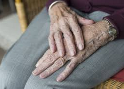
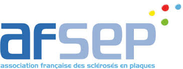
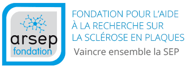

Prise en charge de la SEP
Prise en charge de la SEP
1 - Etat des lieux : où en sommes-nous ?
Le constat actuel
Aucun traitement curatif n’existe à ce jour.
On ne guérit donc pas de la SEP, on vit avec.
Les différents types de prévention (secondaires et tertiaires) vont donc jouer un rôle essentiel dans la prise en charge de ces personnes.
Elles vont en effet tenter de ralentir le nombre et l’intensité des poussées, et de réduire ou éviter les situations de handicap
pour permettre à la personne de rester engagé dans ses activités signifiantes (importantes pour la personne) et significatives (plus au niveau de la citoyenneté).
Vieillissement et handicap
Du fait de l’augmentation de l’espérance de vie, la population française est vieillissante.
La SEP est une maladie qui s’aggrave avec le temps, mais dont on ne meurt pas.
Le nombre de personnes âgées atteintes de SEP et donc se trouvant en situation de handicap augmentera inévitablement.

Accès aux soins, parcours de soins et prise en charge thérapeutique
La SEP fait partie des Affections de Longue Durée (ALD) donnant le droit à une prise en charge à 100% par l’assurance maladie
des soins et des traitements liés.
Le parcours de soins actuel justifie un suivi multidisciplinaire au sein de réseaux articulés avec des structures spécialisées. Quelque soit la forme de SEP, il y aura un suivi continu avec le médecin généraliste et le neurologue. La prise en charge ambulatoire sera multidisciplinaire avec :
- des réseaux et des structures spécialisées
- des centres MPR
- des spécialistes
- des professionnels paramédicaux (kinésithérapeutes, ergothérapeutes, orthophonistes, orthoptistes, infirmiers)
- des services sociaux (assistantes sociales, psychologues, éducateurs…)
- des associations de patients et d’aidants dans l’optique d’une prise en charge institutionnelle permanente, ou de maintien à domicile.

Les objectifs vont être de réduire l’intensité et la durée des poussées en proposant des traitements ainsi que de procéder à une rééducation et réadaptation de l'individu. D'autres objectifs visent aussi à soutenir, accompagner et offrir une éducation thérapeutique au patient ainsi qu’à ses aidants.
Education thérapeutique
Selon l’OMS, “l’éducation thérapeutique du patient vise à aider les patients à acquérir ou maintenir les compétences dont ils ont besoin pour gérer au mieux leur vie avec une maladie chronique”. L’HAS (Haute Autorité de Santé) souligne “qu’elle fait partie intégrante et de façon permanente de la prise en charge du patient”. Elle peut se réaliser par les différents professionnels de santé, dont les apports seront différents et complémentaires. Elle débute dès l’annonce du diagnostic de la SEP. Elle inclut autant les aidants que la personne atteinte et propose d’aborder la maladie sous différents angles : comment repérer une poussée, gérer sa fatigue au quotidien, économiser son énergie, s’informer sur ses droits (aussi bien dans le milieu professionnel que dans le système de soin).
Réseaux et coordination
 
Actuellement en France, on compte 20 réseaux de santé prenant en charge des patients atteints de SEP (AFSEP, AQUISEP…). Ils ont pour objectifs d’organiser et de faciliter la coordination de tous les acteurs impliqués dans le soin. Ils ont des missions communes :
- l’amélioration de la santé de la population
- l’information et communication aux patients, à leurs familles et aux médecins
- l’évaluation et la formation
- la prise en charge de qualité au plus proche du domicile du patient dans un plan régionale et nationale
Les réseaux de santé font des liens entre les structures médico-sociales, les maisons départementales des personnes handicapées, les structures favorisant le maintien dans l’emploi, les services de soins d’aide à domicile, les associations de patients. Le patient est donc au centre de la prise en charge. Les différents types de sensibilisation peuvent donc se réaliser tant auprès des patients et de leurs aidants, qu’aux différents professionnels de santé gravitant autour de la personne.
2 - Les limites dans l’accès au soin
En France, a été mis en place le plan “maladies neurodégénératives 2014-2019” suite à un projet de loi « d’adaptation de la société au vieillissement ». L’enjeu de ce plan est de permettre une coordination renforcée entre le médecin traitant et le neurologue (après diagnostic de la maladie), un meilleur accès à l’expertise sur le territoire avec la création de 24 centres experts de la SEP, et de développer l’accompagnement à domicile. Malgré l’élaboration de ce plan, les personnes atteintes de SEP rencontrent encore des inégalités dans l’accès aux soins. Avec l’évolution de la maladie, les personnes vont avoir recours à des spécialistes dont le délai de rendez-vous est souvent très long et l’accessibilité parfois limitée (ophtalmologues, cardiologues, pneumologues, urologues), elles se voient donc contraint de solliciter les services d’urgences hospitaliers déjà sur-encombrés où leurs besoins ne sont souvent pas pris en considérations.
S’ajoute à cela la non-sensibilisation de certains professionnels médicaux (médecins généralistes, infirmiers, rééducateurs) sur la maladie, les situations de handicaps qu’elle engendre au quotidien ainsi que les différents réseaux SEP existants. La personne se retrouve donc elle-même en manque d’informations concernant sa maladie et ses droits.